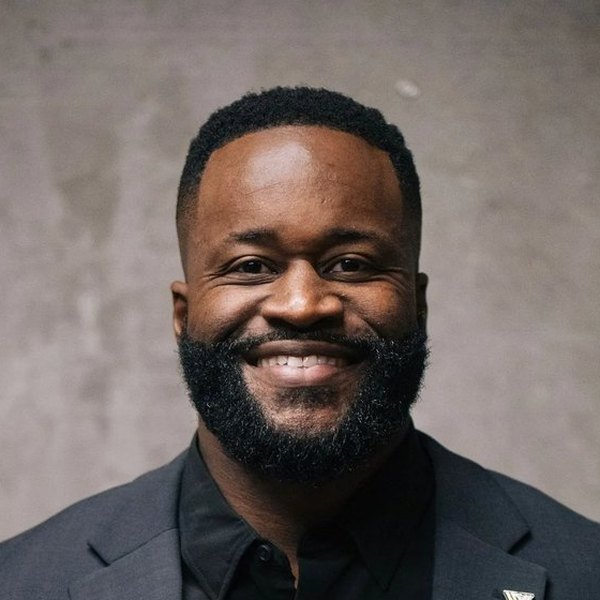
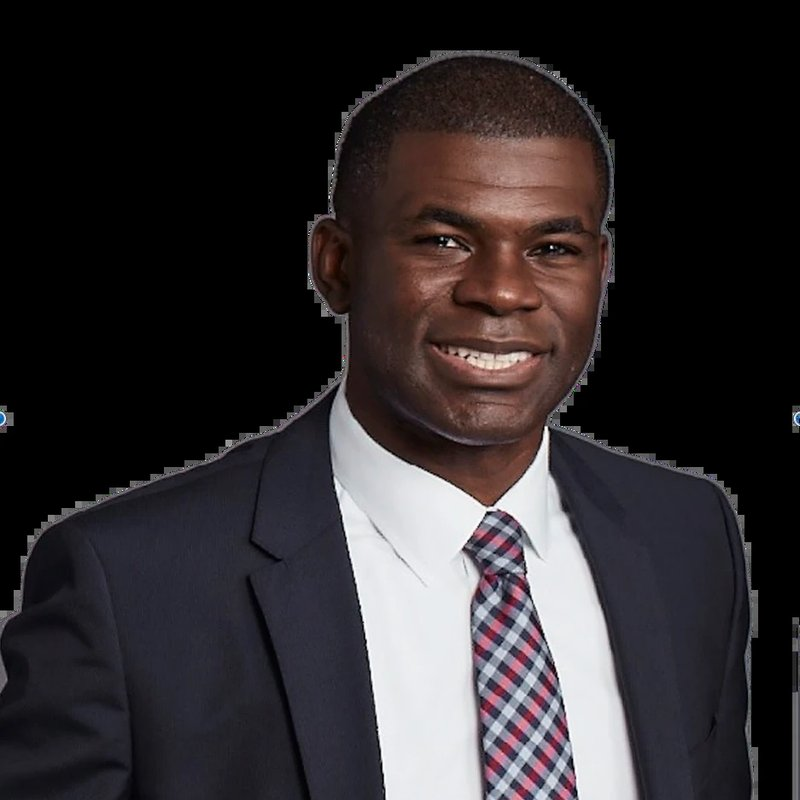
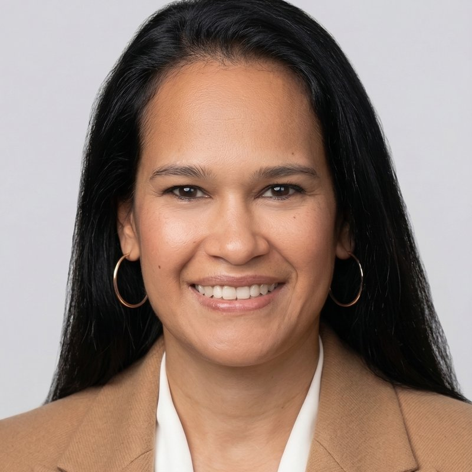

The full replay and notes from Life After the NFL. Super Bowl 50 champion Kenny Anunike sat down with Dr. Kirk Campbell on November 5, 2026. He shared how his parents shaped him. He told how he took control of his money as a rookie. And he explained how he and his wife invest in real estate with purpose. The live Q&A is here too.
The complete conversation. Dr. Kirk Campbell interviews Kenny Anunike podcast style. Kenny shares photos of his family early on. The last stretch is the Q&A with our community.
Twenty-eight markers taken from the timed transcript. Click one and the player above jumps there.

Kenny was born in Columbus to parents from Nigeria. At Duke he studied biological anthropology and anatomy. He planned to become a heart surgeon. He also left Duke as its career sacks leader. He signed with the Denver Broncos as an undrafted defensive end in 2014. He was on the Broncos team that won Super Bowl 50.
After football he coached at Ohio State and at Fordham. Then he and his wife moved home to Columbus to invest. They bought their first rental before their own home. Today they invest in single family homes and multifamily. Every deal has to have a purpose, he says.


Kenny told his story from his parents' first visa to his own rentals. These are the lessons he drew from it. They come in the order he shared them.
The questions put to Kenny and Kirk during the live session. They are summarized for clarity. This is education and not tax or legal or investment advice. Confirm the details for your own situation with a professional.
The habits and rules and books from the night in one place. They are the speakers' own rules of thumb as they shared them live.
Kenny buys homes that need work and brings them back to life. Kirk explained that Mila Penn Chazak does the same with apartment communities. The goal is better homes for the people who live there. His non-negotiables above are how we look at every deal.
Harmony Grove is closed, so nothing on this page is an offer. When the next opportunity opens our community hears first.
Kirk said he only learned a few years ago that a retirement account can invest in real estate. Our September session with Directed IRA explains how it works. Watch the IRA replay or read Invest with your IRA.
This transcript comes from Zoom's captions of the session. Names and terms are corrected and filler is removed. Short replies like "Yeah" are left out. Nothing is rewritten. Speaker names were added by hand. Each turn shows its time in the replay. Open it to read or search the whole conversation.
Hello, hello, everyone. Thank you so much for joining us this evening. Really appreciate you coming out. I'm very excited for this conversation that we're going to be having. We're here with our good friend Kenny Anunike. He's a former NFL defensive end, Super Bowl 50 champion with the Denver Broncos. We're really excited about this conversation that we're going to have. He's going to take us on a journey. About his family roots in Nigeria, his academic pursuits at Duke, where he's a two-time graduate to compete in at a very highest level. And then more importantly. He's going to share with us what kind of led him to build beyond football, right?
I want to really dive into his story about how he decided to focus on entrepreneurship, investing in real estate a lasting legacy for himself and his family. For those of you who don't know me, I'm Dr. Kirk Campbell. I'm an orthopedic surgeon, one of the co-founders of Mila Penn Chazak private equity we specialize in multifamily invest in. However, more importantly, we like adding value to our community. This we're not offering anything here. This is more of a conversation. I think there are a lot of lessons that could be learned from this conversation. So without further ado Kenny really excited to have you here. How are you? You're muted.
It wouldn't be a proper Zoom call if someone didn't start off on, right?
That's usually me, that's my line.
But I'm wonderful. Thank you for having me, honored to be here in front of just a pure greatness.
Wonderful. So let's start with your family story. It's such a powerful story, right? Your parents came from Nigeria with a belief in the opportunities that America could provide. How did your sacrifices and expectations shape the person you've become?
Excellent question, Dr. Kirk. My family is everything, and I see my younger sister right here, Ganiru Mathis, which is a young up and coming esteemed neurologist out of. She's in Minnesota Mayo Clinic, right? And she's so good to see her and see some of my other family members that have joined the call because someone in the family had to be the doctor. I was on the pre-med track at Duke I studied… biological anthropology and anatomy on track to be in a cardiovascular surgeon, and obviously life took me a different path, but Ganiru, she went ahead and plowed through as she made her way through, and I mean, it was not easy, but I'm so proud to see how she is now coming into what's the second year residency and moving into third year, right?
And just doing tremendous. She's got mentees now, right? When I remember she was calling people trying to get mentored, right? So that's a true testament to what true hard work and perseverance can lead to. Alright, so when it comes to just my family heritage and legacy it starts with my mom and dad, and I'll I'll go ahead and share my screen as well, because I do have some everything's better with pictures, right? Everything's better with pictures and videos, so… I'll go ahead and get this here. There we go. So when it comes to my family and my family legacy, these two people right here, my mother and my father are the just the I mean, I can't say enough about how they've instilled in me the power of just having absolute discipline, absolute faith, and being able to persevere even when your back is against the wall and you can't see any way out.
My son is hugging her leg and his name is Chidera. And in our native language, that means what God has for you, no man can take away. All right. So we call him Chief. Chief Chidera. And but obviously it wouldn't be here without me, without my mom and my dad, right? So my mom's name is Abby, and she a Beatju for, and that's her given name. And she's just a praying woman. I mean, just like we're getting up going to church no matter what I don't care what you're feeling, we're going to church, right? And I love that because it gave us such a steadfast foundation in our faith, right?
Because without God, we're nothing. Without God, he is the complete epicenter of everything, and He's the only reason I'm even here speaking in front of you all today, right? So, she is absolutely tremendous. She is my biggest supporter, and I would not be here without her. Then you move to my father here on the right, who's also, I'm in the pink and black that was the cool way in the 90s, right? Like, we don't wear that anymore, but back in the 90s, that was it, right? And then you got my daughter here on the far right, Naomi and Kyoma, which is that which is good, right?
So you can see the resemblance clearly, right? And my dad hasn't aged a bit, neither has my mom. But you want to talk about having a vision we take it back to Africa when they were in Nigeria. My parents knew for us to have the life that we're having now, we had to be born on American soil. So they worked every job that they could to get one visa, could get one visa, put my mom on the plane. My dad said, take our kids and go right? Landed, and it literally had a signed waiver saying, this kid is born on a plane, they're not liable, right?
My mom takes off, and literally lands in April, right? And, right here in Columbus, Ohio, and I was born in May the very next month talk about vision and execution with literally no time to waste, right? And then my dad was able to come over soon after, and that's when it all started, right? And so being able to come from being first generation immigrant in this country it's given me a chip on my shoulder and just it's given the ability to persevere, to come from literally building everything and having nothing handed to you. And I always say this, how can I do nothing with all of my parents gave me when they did literally everything with little to nothing at all right coming to this country and having to build completely from the ground up.
Right, so I would say that's where I got my mentality from, that's where I got my grit, my grind, right? My ability to really transform lives and do what I'm doing now. So I always say vision without action is a hallucination, right? You have to have vision, but you have to take action. Yeah, everybody has ideas, everybody has dreams, but if you don't put action behind them and put them into play, then it's merely a hallucination. And clearly, my parents didn't do that. They put that action behind that vision, and here we are today. And like you see, a doctor we've got my dad brothers in finance.
I'm in real estate and tech, and then my other sister, who also is on the call, she's in medical device sales. So we somehow, someway are all surrounded by medicine. So as we, yeah, as we, yeah, I hope that answered that question.
No, no, absolutely. Such, such a strong foundation, right? So I would love to have been a fly on the wall. You're actively driven, right? You had outstanding academics at Duke. You're an all star in a classroom, you're all star in the gridiron. How did that conversation go, right, from cardiothoracic surgeon to, hey, mom, dad I'm going to go to the NFL. How was that conversation?
So that was not the easiest conversation, I'll tell you that, especially being the firstborn, you're the guinea pig. You're the one that it has to lead the way, lead the charge. I've got three younger siblings coming behind me, and of course, my dad and mom are like, they're looking at you. You are going to be the doctor so that you set the tone for the rest of the kids. So they'll all be doctors, right?
Exactly. Those are your three options, right? Options.
Because in our culture you're either a doctor, a lawyer, or engineer, right? That shows that you are going to be successful. But this are options, right? So, very limited, but those are your options, right? So very recently, as of recent, as the professional athlete kind of reared its way, but I'll tell you how that even came about so I'm studying biological anthropology and anatomy at Duke University, right? Extremely tough, a beautiful, awesome school, but it was not easy. So on Saturday mornings, I'm out there on the field playing Virginia Tech, playing Stanford, playing all these awesome schools and leading the nation in sacks at the time, right? But then, come Monday morning, I'm scrubbing in for lab practicals, right? And I've got a human cadaver leg on the table, and they've got flags out of the sartorius, the vastus lateralis, the pectineus
You're speaking my language.
Right? I mean, all the soleus, I mean, I love all this stuff, right? The flexor hallucis longus. I mean, you name it, right? These are all the things that I'm like, oh my goodness, I love this stuff, but I'm beat up because I'm out here just, like, when you see Iron Man, he's flying, and he's like looking at his body, and he sees the red skin, it's like, your arm is red, your leg is red, because you're just beat up from putting on a show out there that Saturday morning. But, again, this is just in my DNA. I like to do hard things, right? And I think that's a… it dying breed, if you will, now, right?
Because everything, people want it to be easy, have ChatGPT write your 17-page paper and things like that. I didn't have ChatGPT, I actually had to write my papers, and I'm glad I did, because it made me use my brain, right? So now I can use these tools as an additive and not as a replacement. So that's really where that came from, and then from there, I remember my coach is saying, you're actually pretty darn good at football I think you have a shot and I kind of… I talked to my dad about it, and talked to my mom, and they're like. Okay, but this goes back to what we said in high school and what happened in high school was the same exact thing where I remember I came home one day and I'm like, Mom, Dad, I scored my first touchdown.
They're like, okay, but how was your math test? And I'm like, oh, okay, I get it, I get it. I see where… I see where this is going, right? So they took me back to that moment. I said, well, look, I made it. You guys didn't have to pay for pay for school because my dad and my mom got that letter from Duke, and it said, I want to offer your son a scholarship. My dad and my mom like, what is… what's a scholarship? Right? Because they hadn't come from that, right? And then so they was like, well, they're going to pay for a school, and I'm going to get to pick pretty much any school in the nation because my athletic prowess and my GPA.
So my dad, my mom were like, wait, when's your first game? We're gonna be there. We're coming. And then they're in the first row, my biggest supporters from then on out, right? Because not only is their firstborn son getting to go to a prestigious school that's global, right? But also being able to lead that charge, and they didn't have to pay for it, right? Because it is very expensive, so not coming out with any debt was tremendous. Now, I did beat my body up, because I did have a few surgeries during that time but I think it was worth it.
No, I think that's wonderful. So, between your time at Duke, right, and your NFL career I'm sure you were exposed to many different opportunities, right? Both professionally, financially I'm curious, right Duke University, right? This is a preeminent institution. NFL, right? He played for the Broncos. You're a Super Bowl champion. Who actually taught you about money, right? How did you learn to manage your finances? We're talking a little while ago and we spoke about Paul Pierce, right? He's made over $200 million in his NBA career but now they're news coming out about he's financially struggling, right? Who aren't you about money? How did you learn how to kind of think about generational wealth?
Absolutely. Another great question. And I would say once again, my parents were the first foundational layer of money. But then I had to take that onus on myself to teach myself, right? And we talked about this before, right, Doc? Where I said if you don't take time to educate you for you, somebody else is going to educate you for you, and that's going to be an expensive deal for you to pay, right? So, I'm gonna tell you this, my mom and dad never let me have a credit card until I had, like, graduated college, right? I didn't have a credit card, not one credit card until I graduated college at the time, I see some of my guys are getting… I got my credit card, and they got their credit card, and they're running in there and buying shoes and putting it on the internet, like, oh, don't worry, I'll pay it off.
And then they're just burying themselves in debt, right? Because that's the game, right? You're not… you're not touching the money, so you're not really feeling it leaving your account right, and then you forget about it because it's not leaving until 30 days from now, right? So, my parents knew that and they wanted to really instill in us, save, save your money. If you really want something, go to sleep, wake up tomorrow and see if you still want it, right? Like, that was the true test, because you let it all kind of get past you. My sister's laughing because she knows this is exactly how we grew up in our household.
But at the time, you didn't really understand it, but now I totally understand it, because it was giving me the foundation of patience, right? And delayed gratification, right? Which is massive, right? That's huge, and we're gonna get to that, because that's what real estate is all about, right? Delayed gratification, right? Not that instant gratification, right? We're thinking long-term, right? So and that's really where… I mean, I picture going back to my first year of the Broncos, and I was, of course you're… I'm a rookie, I'm making a lot of money, and I go to the dealership to buy my first car. I wasn't even anything expensive.
I'm in Denver, Colorado, so I'm like, well, when in Rome, buy a Jeep so I was going to get a Jeep Grand Cherokee Overland, right? Like it's got the bag suspension so it can raise on sand and rocks. I might do a little crawling or something. I don't know in the mountains, right? And I remember the guy looking at me and saying, yeah, you've never had credit. So yeah, we're gonna have to give you like a 15% interest rate. And here's the thing, I had a car before, but I was like, this sounds predatory, right? And I'm the fact that I could buy this car several times over in cash, but I wasn't going to do that.
But they're treating me as if I'm not trustworthy. So that was my 1st flag saying, you need to build credit right? Because if you don't build credit, or I understand the reason behind credit. They want to be able to trust you. If I give you this item, will you be able to pay me back consistently, or will I have to chase you around? Right? That is the essence of a credit score explained to a five-year-old, right? So that's exactly what I started to understand. And once I realized that, I said, okay. I need to get a credit card, right? But I wasn't just going to get any credit card. And that's when I decided to take my finances into my own hands and seek out this knowledge. Because like I said, I didn't want someone else to teach me this lesson and I foot the bill
Yes, no, you're absolutely right. And it's a similar story. Throughout my education, right medical school, residency, fellowship, nobody ever sat us down and taught us about personal finance right? And with physicians, lawyers, and other professionals, we go from having nothing to graduate and all of a sudden we have this big paycheck, right? But we have no idea how to balance it, and a lot of people also have a big loan student loan for putting themselves through school, but you know nobody really teaches you personal finance. And I love the fact that at some point you decide to take greater control of your personal financial journey, right?
You're relying on your financial advisor, and then at some point you decided like, you know what? I need to play a bigger role, right? I need to have alternative assets play a different part of my overall financial journey. Walk us through that process.
Absolutely. So this goes back to my first season in Denver in 2014. I'm a rookie, right? My first contract, and I am just ecstatic. And you've got some really heavy checks rolling into the bank. And I'm going to be honest, I had no idea. I'm just depositing in a Wells Fargo checking account, right? Making 0.00% interest, right? Or not interest, but APY, 0%, right? And there's a difference, right? You want annual percentage yield, you don't want you won't want to be paying interest out, right? So I remember leaving practice one day, and I said, you know what, I gotta figure this out. So I walked into… and we're right in Dove Valley, right there next… about 3 minutes from the practice facility.
I didn't want to live too far, because I was like, look, I'm here for a mission. I want a job right? I just want to come here and grind, go to go to work, because this is an absolute blessing. I've always wanted to play in the NFL and to see it come true was tremendous. And fun fact, right, the very first NFL game that I went to, I played in it, right? And it was the Denver Broncos versus the Cleveland Browns, and I was in Cleveland, right? It was in Cleveland, in front of my whole family, right? Everybody got to see me get my first tackle, and I mean, I just remember being on kickoff return, and I'm, like, looking down this is what a stadium looks like, and I'm on the field, right? Like, how wild is that, right?
Pretty surreal, right?
Pretty surreal, man. Pretty surreal. So you fast forward to now kind of getting my wits about me and starting to understand what it's like to be in the NFL. And I just remember walking into the bank. It was a Wells Fargo bank right there in Dove Valley. And I said, excuse me, is there a branch manager? I'd like to speak with a branch manager. And she walks right up to her, I never forget, her name is Beth, and she's fantastic, still friends to this day. And I just let her know, I was like, hey, I'm one of the new rookies here, and I just want to learn about finances and my finances.
I want to really take control of them. And she's like. You're the first, like, NFL player that's ever walked in here and said that to me. But she said… she was laughing at first, she said, you're serious. I said, I'm dead serious. Like, this is not a joke, this is generational wealth, this is my legacy that I'll be leaving for my kids one day. And she said, okay you come in here, Tuesdays and Thursdays after practice, give me an hour, right? Then, in 6 months, I guarantee your very first credit card will be an Amex. See, I never had an Amex before, but I knew what it was, right?
And I knew that was pretty serious. So, I took her up on that for the next six months, I was in there like clockwork, right? Because I'm out, if you're on time, you're late, right? That's always been my… me and my family's mantra. And literally went in there, she put me on a secured credit card, gave her $500, right? She's like, spend 10% of it, pay it off, spend it. So I'm buying a t-shirt, paying it off, buying gas, paying it off. But by the end of that 6 months I got a Wells Fargo 365 Propel Amex credit card, and it was all white with gold horses on it, because Wells Fargo has a horse and chariot, right?
So look at that. I think that was God, that was God. It was like, you're the golden horses, right? So everything just made sense. So once I had that, and I had that foundation, because she put me on a secured credit card, and then now I got to an unsecured credit card, and I saw now it's like an unlimited spend, but she knew I was going to be disciplined with that because I was disciplined with the little, right? I was disciplined with the little, so I'm going to be able to be disciplined with the big, right? So that was my introduction to finance, and then now I set up the credit card profiles for my family, and I talked to them about how to save, how to invest.
And truly realize that you went to work hard for your money. Everybody on this call has done and literally worked extremely hard, has had the discipline, has had the fortitude to make some type of capital, but now you have to put that capital to work and make it work 3, 4, 5 times harder for you than you did for it
I love that. Such a wonderful story. And then you start to work with a financial advisor who is kind of advising you how to build your wealth. And at one point you decided you wanted to know more, right? And I think the thing I'm getting this thirst for knowledge, right? You wanted more. You wanted to understand how to create that generational wealth. Walk us through that story that you spoke about before, how you decided to earn yourself extra 1-2% per year.
Interesting. Absolutely. So this goes to where everybody's like, hey, you got to hire a financial advisor. If you're making X amount of dollars, you have to make sure that somebody else is managing it, right? And I was just like, oh, okay, well, let me go ahead and do that as well. And found a guy, did a great job, did a great job but one thing I did, I did not relinquish full control, right? So I gave him a portion of my portfolio, and I reserved another portion of my portfolio, and I used that to trade and teach myself right? So of course, right off the bat, made a few mistakes, right?
But I didn't make large mistakes, right? Because I was working with a smaller of capital. I'm watching how he is positioning my capital and really just maintaining my wealth, as opposed to it, right? And utilizing the fact that I was young, still am young, right? And being able to have time on my side, right? So not being like 90% in bonds and 10% in alternatives, right? At 24 years old, that makes zero sense, right? That's more when you're at retirement and you need it to be more stabilized, right? And you're getting ready to pull it out, right? Things of that nature right, so when I started to see some things of that like that, I said, you know what?
Let me go ahead and respectfully take over the range, just like any coach on the if you see some things are happening let me go ahead and take, get on the headset, and I'm going to take over the play calling right, so I took over the play calling, and once I did that, I mean, this… the Milky Way was the limit, right? I mean, the galaxy, you tell me, I'm telling you I started to understand that I can be invested in the stock market, and then I can also take a portion of those, that capital or even the dividends that I was making from the stocks, right?
And invest that in alternatives, invest that in real estate, right? Invest that in tech, my own tech, and things of that nature right? And be able to invest in startups right where now I'm diversified across my portfolio, as opposed to just being in bonds, right? Or just being purely in the S&P 500, right, and things of that nature. So
Especially in a day like today.
Yeah, exactly. So that's when you start to look away from that side and look at your other… let's say, we're still good.
Correct. It's always important to have uncorrelated. And I think today is a perfect example, right? It was a bloodbath on Wall Street, especially in the tech sector. But if you're investing in other asset classes, right your portfolio stays balanced, right? And that's something I also came to a similar realization with my financial advisor, who is phenomenal but I decided to take a greater role, right? Because prior to a couple of years ago I knew nothing about alternatives, right? That's not something that my financial advisor ever discussed. And when I brought it up, I was like, oh, yeah, you could invest in that. I was like, wait a second but you didn't tell me, right? Why was this not on the menu? So it seems like there's a second
Right, and I think we all know why it was an omission.
Well, because correct, because they don't make any thing on it. And listen, I respect the game, but we have to be well diversified so it kind of tell us. I love what you're doing, right? You grew up in Ohio, right? But you've also started investing in Ohio, right? You're investing purpose. Walk us through how you've been doing that
Absolutely. And I love that you use that word, right? Me and my family members, my wife, we all talk about the fact that we only invest in things that have a purpose driven initiative, right? If it's not purpose-driven, we don't want anything to do with it, right? Because that's where you generate impact. And if you drive impact and you create value, I guarantee you the byproduct will be cash flow, right? It's inevitable right? Because you're bringing value, you're adding to something, creating something that people need, a good, a service, what have you, right? Because let's be honest, right? There's there's you get compensated for having vision, right? Having vision, having strategy, but then more important, most importantly, having the execution skills behind it, right? So did you encompass and bring all those three things together, and when that happens, it is absolutely magical
No, I absolutely love that. So we're talking abstract. Give me a solid example, right? How do you invest in purpose, right? You like doing something called a value add strategy. How do you add value to something? Are you buying like a single family? Are you doing a multifamily while you add in value, right? How you add into the community, and more importantly, how you helping to kind of create that generational wealth that you want. How's your money working harder than you are?
Absolutely. So when it comes to value add creation, really love to just drive down like even some of the streets where some of my properties are located. And if I see something that is just boarded up, it's dilapidated, the walls are falling down, doesn't have a roof on it, right? The weeds are overgrown. Obviously, that place, I can just tell you right now, doesn't have what we call a certificate of occupancy, right? People cannot live there. But understand this, everybody on this call, relatives, young, old, short, you name it has to go home somewhere, lay their head down, right, and be able to get a good night's sleep.
That property is not possible, right? Without someone like myself or someone like my wife, my team, right, to be able to come in and say, you know what, we're going to go ahead and purchase that property. We're going to go ahead and call the city, get the necessary permits in place, right? And then now get, or if we have to to knock it down and build brand new whatever it may have you, but in 3, 4, 5, 6 months, come back and I guarantee you, the lights will be on, the windows will be new, right? There will be a brand new floor, brand new HVAC, hot water tank, and then just fixtures, right?
So that someone, and I've done this, I mean, it brings it kind of really like tugs on your heart when you drive by and you see move-in day, and you see a little boy or a little girl that's running into the house, and they've got their little toys, right, or they're sitting on the sidewall, and they're drawing with some chalk, and then the mom and dad's got the moving truck, and they're moving in and it's like, wow, you have no idea what it took to for you to be able to get those keys and unlock that door and call this place home.
No, that is such a beautiful story. And with Mila Penn Chazak we try to do something similar, right, in terms of value add. And for us, we try to do it at scale. Like we really try to capitalize on the economies of scale and yes, we're first and foremost, we're investors, but more importantly we want to improve the lives of the people who live there, right? Home is such an important part of who you are, especially for that young kid. Want to make sure they have somewhere comfortable to live somewhere they're proud to call home. And when you do it with purpose, the profits will come, right?
That's it. 100%. And Dr. Kirk, you understand this as well. When we see a plot of land, we're always looking at what is its highest and best use, right? If that plot is 2, 3, 4 acres, the highest and best use is not one single family right? You're talking about now, the highest and best use for that property is to be a multifamily development, right? Whether it be 100 unit, 150 unit, a 200 unit, because now you're optimizing that space for multiple families to be able to dwell
Yeah, yeah, I love that.
In a place of harmony, right? All right. And of course, yep, pun intended there, right? But that's what it's all about, right? So being able to have that vision, be able to say, you know what, come in here and value-add, but at economies of scale be able to use that plot for 200 units, as opposed to just one or two single families.
I really love that. So with real estate, you could create cash flow is to create appreciation, create long-term growth and tax advantage growth of your, wealth. When you're evaluating a potential investment, what's the most important thing for you?
Absolutely. And that's a great A great question. When it comes to evaluating a real estate deal you really want to look at a combination of things, right? Just like you said, is it the appreciation? Is it the depreciation? Is it your cash flow? Is it your cash on cash, right? Is it or is it a combination of all, right? That's what I love. You can have in real estate, you can have your cake and eat it too, right? And if that decision and that play is made on the buy, right? When you buy it, you have to buy right. My dad, my mom always say location, right, so you want to make sure that the location is absolutely correct.
You also want to understand the area median income, right? What is it like? Who can afford to live there, right? What are we building? Are we building affordable housing? Are we building market rate? There's so many different things that come into the equation but it is very possible for you to be able to look at that property and say, one day, right, if we if we choose to sell, then that's perfect, right? But if we choose to hold, right, then that's also perfect, right? And be able to really evaluate that deal make sure that it is A going to cash flow. B is you're going to get appreciation, right? C, you'll be able to depreciate it on your taxes, right? So that's another way. So there's again, and also when you're making that W-2 employee status, right, and you're getting those checks from
Yeah, neither am I. I like where this is going.
Your hospitals, you're able to utilize the savings, right, on the real estate. Now, I am not a tax professional, so please go and consult. You go and. Consult your tax professional, your accountant, but I'm just giving my experience and what me and Dr. Kirk have been really talking about for the last few weeks, because once you get into real estate, you get the bug, and you start to understand the power of true generational wealth and the cash flow that can come with it, the appreciation that can come with it, the 1031 exchanges. There's so many different, I would say, plays that you can run with real estate once you understand the playbook and you understand the language and the play caller at the helm.
Yeah, no, I love it. And highlighted a very important point earlier, right? Real estate is not a rich quick scheme, right? Especially when it's done writing at scale and type of investing that we're talking about. We're talking about building generational wealth, right? This isn't about, like a quick flip type of thing. And I love the fact that not only are you building a real estate portfolio, not only are you invested purpose and having an impact on your community right there where you grew up, or you're doing it with your wife, right? And you're teaching your young son and your young daughter about building a business, right? Entrepreneurship, building generational wealth what does that mean for you beyond simply leaving your children money
Well, we all know that when you just leave people money that never earned it's going to be spent faster than they received it, right? So, like you said, being able to build this empire, if you will, with… alongside my wife, who is also a Duke Blue Devil, we met in college, right? So she was on academic scholarship, much smarter than me. All right, and much better looking as well. I know I'm a little hard to look at, but she's… our kids took after her, for sure.
Mine too.
Clearly, clearly Rosanmi, right? Clearly. But it's been absolutely tremendous. I know a lot of people said they can't really work with a partner. I love going to work with mine, right? I mean, we are an absolute team. And when you think about it, who better right then to have your back, then your life partner, right? And it even goes back to when we were at Duke, and we started working on just like, what was our life going to look like? And when I got out of the NFL, so I finished with the Super Bowl champion with the Denver Broncos. Then from there I went to the New York Jets.
That was a complete different regime, but grateful for both, right? And after that, came back to Columbus, and we were going to start our business and start doing… but then got the nod to coach for Ohio State. So I ended up coaching for the Ohio State University for 2 seasons. Urban Meyer's last season, and then Ryan Day's first season. So a tremendous turning point, right? Almost seismic shift, if you will, right? And then from there, went to Fordham University to become the defensive… co-defensive coordinator, on the football team and that was at the height of the pandemic. This was 2021, right? 2020 going into 2021. And my daughter was just born. And so we had a one year old in New York, in Manhattan. Right. I mean, we would go down to Times Square and there was tumbleweed. You wouldn't see a soul
Yeah, empty. I remember it well.
Yes, you do, right? Right. Eating in the glass, tape the huts, right, with the masks on. But that's when I looked at Layla and I said, we're gonna go back to Ohio, right? I've been studying the market for about a year now, and I've really, truly feel Ohio's about to boom right, Columbus specifically where I was raised. She was like, are you? Are you serious? Are you sure? But again, it comes down to the vision. I had the vision, and all we had to do was execute. So the 1st thing that we did had no idea about real estate, had owned 0 properties back at that time and we started studying, studying.
Got a realtor that was also a Duke Blue Devil, and he lived in Columbus at the time and had a lot of properties. So he was able to teach me a few of the things. So I didn't make any a lot of mistakes that some people make when they first get into it. We ended up buying our first investment property prior to buying our primary property. So that year we bought that property and I still get calls to this day, right? People trying to buy it, right? Trying to buy. Still have the same tenants to this day going on seven years, right? So again, being able to provide a safe place, right, with working mechanicals, right, and the rent is not sky high, right, and things of that nature, and that's really what got us into our real estate journey.
And then I said, you know what? Go get your real estate license. We're going for a ride. And she did exactly that, and now we're into double digit double digits in our portfolio we've got some really big plans moving forward in the future and our kids see it too. They'll drive by construction sites. My son, he's, he's three about to be four, and my daughter's six and they'll say, mom, dad, when they see like a big cat or something, and they see
I love it, love it.
Like, is that one of your houses? Is that one of your projects? Right? So, it shows you that they're already thinking like owners, right? They're thinking ownership, they're thinking bigger, better, right? They're thinking, right, to build, to add value, right? And they can't quite see what it's going to be, but they know something is a value
Something's happening
It's coming, right?
Yeah, that's such a beautiful story. And real estate is one of the oldest, if not the oldest asset classes that there is. And I love the fact that you're very intentional about involving the entire family in your real estate investment. And my wife, Rosanmi and I we've also tried to be similarly intentional in building our multifamily business, because you mentioned it earlier, I don't want to leave my children money, right? I want to leave them with the skills to perpetuate whatever wealth that we have. It's more about legacy for us. So they see us evaluating deals, they're evaluating deals as well, right? It's all about the playground for them, so that's a different story but I think it's important to teach them these lessons, right?
And me, it's about teaching them how ownership, right? Ownership is very important you have to have the entrepreneurial drive, and you have to know how to think, and. Do you want to others is, like, others who do unto you, right? Those are things we try to teach our children. What lesson, what's the one lesson that you want your children to learn from you building your real estate portfolio? What lesson you want them to take from that?
I love that and I love what you and it actually follows the same suit of what you're building with Rosanmi, right? And I'll say that number one lesson that I want Naomi and Chidera to really take from their mother and their father is when it comes to anything that you build think generationally right? Think generationally. Don't. And again, it goes plays right into real estate, right? We're never the quick flippers, right? Just like try to put it's all long term mindset. It goes back to what I said in the very beginning, delayed gratification. It might be one year, it might be two years, might be 3 years, but in that year three you're going to be happy you waited from that year one, right?
Because now what has happened, right? The times have changed. This building has grown, it's stabilized, right? And now it's booming, right? And now you can you can exit, you can… there's so many new plays that you can run with this building, but you're thinking generationally, right? And it actually goes… this is a funny story, right? Anytime we get in the car, it ties right in. My son will be like, Dad, can you play Michael Jackson he's… he was born in 2022. 2022 and he loves Michael Jackson. He's singing thriller
King of Pop, I love it.
Right, I mean, he knows all the Michael Jackson songs, and Michael Jackson is like 25, 30 years older than me, right? It's crazy when you think about that, but Michael Jackson was generational, right? It just shows, like, his music spanned over generations, because not only did it go through my father's age, but then through my age, now through my kids' age, right? Thinking in terms of generational legacy, right? What are you doing today to ensure that you'll be remembered generationally tomorrow?
I absolutely love it. So, many people watching tonight, physicians, attorneys, other people who've built successful careers they may have limited experience investing outside of the traditional market, stocks and bonds what advice would you give somebody who's interested in real estate investing with purpose, in investing for cash flow, appreciation, all the tax benefits? What advice would you give them? How do they begin
I feel like it begins with calls like this, where you can listen to people who have actually been in the driver's seat of that innovation and have successfully done it, right? When you can look at their portfolio and say, okay, he built that, he renovated that, he's working on that, he's co-developing that right? It needs to start to ask questions, right? Like, what is a co-developer, right? What is a GP versus an LP, right? What is the waterfall strategy, right? What how do I get my multiple back, right? How involved do I want to be? Do I want to be more or do I kind of want to just put my capital in and go about my day and know that in two, three years, it's going to be double, hopefully, maybe even triple.
Who knows? But that is the power of real estate, and the fact that if you buy right and you have patience over time there is a strong possibility that it will do the opposite of a car. It will go up in value as opposed to go down. And if you do like cars, which a lot of my guys do, I always advise was like, look, let's buy some real estate and let this cash flowing asset that's appreciating the dividend pay for your liability, right? Because when you drive that nice Mercedes right off the lot, you've already lost $4,000, $5,000, $6,000, right? I mean, it's going down.
And go ahead and try to trade it in the next day. Guess what they're gonna take? They're not gonna pay you more for it, I guarantee you, right? But for property, they most likely will, right? That same property, year one is not going to be worth the same in year five.
That's such an important point. I think, you know buying assets instead of liabilities, right? I think that's one of the key things, that everybody should remember, right? Yes, it's nice to buy the nice things. You mentioned delayed gratification in medicine in law and other professions where you go through a lot of schooling, it's all about delayed gratification, right? But you also have to think longer, term and building wealth along that lines, what is the one piece of advice you'd give your younger self about money investing in building long-term wealth right? We're looking at Kenny in the early 2010s, right? You're about to embark on a NFL career. What advice do you wish you had then that could have maybe supercharged your current journey
Great question, Kirk. Great question if I could go back and tell myself back in 2010 one piece of advice it would be buy real estate now buy now. Had I purchased real estate back then it would have doubled, even tripled in value now. And I know this for a fact, because right here in Columbus, that's exactly what happened. And you know my father, my mom, they were on that same path, doing the same exact thing. And when I see how they were able to buy a few of their properties that were the similar size in properties that I'm buying now, right, due to inflation, right?
And it's mind-boggling to see that I had to pay more like almost $150,000 more for the same piece of property, and it's only been 10 to 15 years. That should be an indication that there's something here, and especially when the value of the dollar is being devalued every single day as we print more and more of it, what's not being printed more of is land. So the more land you can own, the more property you can own, it's one of the greatest hedges against inflation is real estate, right? So when you… if I could have understood that property when I was much younger, right, I feel like I'd be better off today, right?
And not even myself, but my kids' kids, right? And you even go back, you see that, right? With kids whose grandparents have handed them property down that they paid $10 for, and now it's going for $100, $200, $300,000, $400,000, right? So that's really where that generational wealth kick comes in, and I'll say that that would be the number one, is to start looking outside of the traditional stocks and bonds, which I'm heavily invested in as well, but like we've said diversify several streams right and like my streams tech and real estate. Those are the two streams you'll catch me in at any given time.
Now, I absolutely love that, right? I was reading something. The other day, they remind me that if you look at the world's wealthiest families, they each have. At minimum, seven different streams of income. Right? So we cannot rely on our W-2 income. Right, you can't rely, if you're an athlete, you can't rely on just your game check, right?. As a physician or a lawyer, you can't rely on just your income from your career, because athletes. Physicians, lawyers, bankers, right? We all have something in common, right? Our money is made from doing something, right? We have to be maybe not bankers, they're a little special. But athletes and physicians.
Our money is made by us being there and being present, right? So I think real estate and all alternative assets allow us to kind of unlink our money from our time. Right? Because we exchange. Time for money at a very high rate, but in the end, we're limited by time. If you're able to do other things. To kind of generate wealth outside of your time is such a beautiful thing. Well, Kenny, this has been… such a wonderful conversation. I've learned so much. Absolutely love hearing about your journey. I love what you're doing right there in your hometown of Columbus. Ohio, right, investing for purpose while generating nice returns. Right. I'm going to open the floor up to questions from our audience. I know I've kind of dominated the conversation. Let's see if anybody has any questions. I could keep going all night.
Oh, we can talk all night. Definitely can. But that's a that's a great thing.
Any questions?
I have one question. Thank you, Kenny and Dr. Campbell. This has been wonderful. This has been really great. I'm really new to this space. I don't have a whole lot of experience in this space, and this has been wonderful just to kind of hear. So I'm a resident, as Kenny kind of mentioned, and I'm very, I'm interested, but just at this time don't really have much experience. I'm wondering if you guys have any suggestions, or are there any, like, YouTubers or any podcasts or resources that you guys, maybe in your early days or even now still, like to kind of listen to or, like, recommend for people who are kind of new to this space, just to kind hear more and learn more, and of course these kinds of conversations are super helpful, so just wondering if you guys have any recommendations.
Now go ahead, Doc.
Yeah, you gotta go first, Kenny? Oh, okay. So really outstanding questions, right? One of the books that really changed my entire mind set about investing and working and kind of building wealth. Is the Purple Bible, right? Rich Dad, Poor Dad, right? That is such a foundational book kind of teaches you how to see yourself. In your money, in a kind of a different mind in a different frame of mind. And then the follow-up book, Cashflow Quadrant so that can. Kiyosaki is such a brilliant writer. Those are, like two foundational books, right? And then there's another book called Wheelbarrow Profits. By Jake and Gino, and it kind of tells you how investing in real estate kind of worked.
Now we're probably one of the greatest times for information exchange. Probably in history. Right? There are so many different podcasts that teach you about real estate invest in there's. Cash flow for a lifetime, real estate warriors. There is the White Coat Investor. There's so many different podcast that you could find real estate investment advice clearly take it with a grain of salt. A lot of them are promotional. In nature, but I think the topics that they hit. Do… You know, add a little bit of value to what you're doing, but I think you've taken the first step. I wish I knew about investing in alternatives when I was a resident.
You are decades ahead of where I was. Right? So kudos to you for even considering this, right? I had no idea that you could invest in real estate with a retirement account. Right? I learned that, like two or three years ago, right? And this is something that people have been doing for decades. Funny story, I told it a couple of webinars ago. Peter Thiel invested in. PayPal, with a retirement account, right? I think he invested, like, less than $5,000 you know in his through his retirement account in the PayPal. And not at 5,000 is worth $5 billion.
Right? Tax-free.
Right, completely tax-free. And those are things that they don't teach us in… medical school, residency, or other professional schools. Right? So there's all these little things that now I'm listening to podcasts, people are like, oh, you can invest in a self-directed IRA. There's so many little things. So I think you've already taken the first and most important step is to at least knowing that your options, right? And then you'll kind of go down that rabbit hole.
Excellent question. I'll chime in on top of what Kirk said, and those are awesome books, 1000%, and adding to that, I would say one that really helped me to understand the fundamentals about real estate investing was The Millionaire Real Estate Investor by Gary Keller. That was a really good one as well as The Richest Man in Babylon, right? And that's by George S. Clason. So those were two, but he mentioned the Purple Bible. And I had never heard anybody mention that before. With Rich Dad Poor Dad, like Robert Kiyosaki, which is another great one, and it's so true the keys to ultimate knowledge are truly hidden in books.
Right? Because nobody really reads anymore, right? But the fact that we have so much AI, we have Claude, we have ChatGPT, we have the ability to really summarize things in the heartbeat just like that. So there really no reason not to understand and be able to research these things. When it comes to understanding like the fundamentals, but like Dr. Kirk said, Ganiru, this is the first step. I'm so glad that you joined the call because this is the types of calls that you will start to understand and learn from people who are actually doing it, and that could now give you the help that you need and give you that stepping stone to get to where you want to be, right?
And like he said. Each and every one of us athlete, doctor, right? You've worked so hard for your capital. I've never met anybody that just woke up and said, you know what? I'm just going to go play in the NFL, or I'm just going to go wake up and become a neurosurgeon. That doesn't happen, right? It takes what I say the three, these three things in total tandem and that's focus, discipline and consistency, right? You couldn't do what everyone on this call has done without ultimate focus, relentless discipline, and tremendous consistency, right? So now, why not apply the same thing to your finances to allowed to put into a vehicle like the alternatives to allow it to grow and return to you with an X on the end, right?
And that's a multiple, right? That's what it's all about while you're out working, like Doc said, trading time for money at a high rate, very high rate, it's still finite compared to what it could be doing in an alternative vehicle like real estate.
We got some questions in the chat. So, one of the questions is, thoughts on the benefits of REITs to start with early diversification.
Yeah. Yeah, so a really great question. So, I think REITs are really good option. And the thing that… I personally my hang-up with REITs. Or the fact that… A REIT is a real estate syndication. However, it's a real estate syndication. Where you're not getting all of the potential benefits. Right? What a REIT is, it's like, let's say a Vanguard REIT. They'll buy like, 10 different multifamily properties or other real estate properties. And from that, as people are paying their rent. They're distributing cash flow, and they pay you a dividend. However, that dividend is limited. Right? You see it grows 5, 10%, right? But you don't get any of the tax benefits with it or real estate syndication is essentially a REIT, but on a smaller scale.
Instead of being invested in 10 different properties. You're invested in only one property. However you're an owner, so you get all of the tax benefits that come with owning that property from depreciation. You get all of the appreciation off it as well. Plus, you're getting cash flow, right? So real estate syndication is in fact a REIT. But I think it's more for REIT on steroids. Right? But I think to get your toes wet into the real estate space, I think a REIT is a good. Option. However, I would not limit myself to just a REIT. There are other alternative. Options that you have as well. Really good question. Any thing to add can anyone add some color to that?
Doc, you hit the nail on the head like you said, that is one of the most passive ways that you can get into real estate, but that passivity does come with its say, consequences, right? Where you're not going to get all the benefits of, like you said, doing the real estate syndications or being able to really, truly build it and be heavily involved into it where you would be a little bit more active, as opposed to that passive. So, but that is one way, and if that's the way that you know you'd like to get into the get your foot into the door, that's totally fine, but I would ask a lot of questions, right?
To the point where you're almost an active but passive investor, right? As you're investing, you're learning, right? You're learning so that you do get more into and step closer towards that ownership role, but then through the LP lens of getting into the real estate syndications, like we're talking about tonight.
That actually leads to the next question. I don't know, it was coincidence, because what you just said is leading to the next question. So do you have a set of core money rules that guide your investment decisions? For example, do you prioritize liquidity, cash, or growth? What are your non-negotiables?
Do you want to start?
So, and the reason why I said that I laughed is because me and Layla, when we're always talking, and we evaluate deals literally every night, like, every night. It's fun for us, right? We like to say that we're playing real-life Monopoly, and we're passing go, and we're collecting way more than $200. All right. So I remember we bought a property and we're so happy. It was one of our first properties that we bought and it was a single family on literally one of the busiest roads in Columbus, Ohio mistake, right? Absolute mistake. So as we're driving, we're trying to, like, go see it, right? So we brought it sight unseen, which again, that was… don't do that.
Like, if you're gonna buy a single family we're gonna… just talking single-family here. But as we're trying to like stop at the property, people are honking and like, you can't even stop. So we're like, whoa, if we can't stop at your own property, turn in, I can't buy it, right? Like, if I have to go all the way around back just to get to my front door, I'm not gonna buy it. Right, so that just stuck out as, like, a non-negotiable, but when it comes to the economies of scale and, like, the big-time deals where, like, Dr. Kirk is working on Harmony Grove, things of these nature, right, I would say we personally really like to prioritize the cash flow, right, but then also the growth, right?
Big time on cash flow and growth, right? The liquidity will come, right? Again, if you're patient, the liquidity will come, because there's so many things you can do. Of course, the overarching is the exit and the sale. But there's also another way that you can achieve that liquidity or get your liquidity back, and that's a cash-out refinance, right? So when you can purchase a property, right, and this is where the value add piece comes in. You buy the property for X, then now you go in and you can renovate it and add floors, redo all the cabinets, right, new kitchens, new as new mechanicals, which is HVAC, plumbing, and electrical, you name it, right?
But then you get everything together, new roof, right? And then you go back to the bank and say, hey, remember when I bought this property and it looked like this? Guess what? It looks like this now. The appraiser came out and said, it's worth this. So now I'm going to go ahead and do a cash out refinance, which means putting a mortgage on the property, and then the bank is going to loan you that money back. That is a key point that I just made there, because when you get a loan, you cannot be taxed on a loan because it's something that has to be paid back, right?
So now you just got a six-figure check back into your pocket, and then you're able to hold onto the asset, you cash flow the asset, you depreciate the asset, you appreciate the asset, but then you also move tenants in that are going to help you pay down the mortgage, right? So I just dropped a lot of game and I hope you caught that because it took me a lot of years to realize and learn that one, right? But that's what it's all about, right? And that's one way that you can be able to achieve really all three. The liquidity, cash flow and the growth on that property without selling the units.
Yeah, that, my friend, is the beauty of real estate, and you kind of just beautifully summarized it similar to you, I think my non negotiable. So, when we're putting a real estate syndication together. Before we even look at the asset itself, right? We do a really deep dive on the market. Right? Kenny mentioned that he looks for that ugliest house on the prettiest block, right? That's what a value-add strategy is. But when we're looking for a value-add deal. Our property is over 90% occupied, right? They're cash flowing, right? These are not distressed asset. These are properties that are paying. And they just need a little bit of TLC.
Right, we look for assets where we don't have to rely on market forces and Kenny mentioned that you make your money on the buy, right? And that's what we do. We're extremely conservative in all of our underwriting. It has to pass multiple different checkpoints I usually share. One of my tests, right, is called my mother's retirement money test, right? If I cannot invest my mother's retirement money in any of our deals. The deal is not safe enough for us to invest in, so. Those are the things that we look for, right? It has to be a high occupancy ideally above 90% occupied. We have to have a fixed rate financing, right?
We don't want to be subjected to market forces. The property has to cash flow. Right? And we're looking… you cannot build new land. Right? So we buy our assets in fantastic locations where. Great job growth, right? Great population growth, right? Those are the types of assets that we look for and for us. Those are non-negotiables, right? We don't want to rely on market forces. We want to force that appreciation. And that's the things that we look for. Great question.
Absolutely. And I love your strategy, Dr. Kirk. That's what it's all about. And your strategy is that is economies of scale, because we all know that the key metric that determines the value of a multifamily asset is the NOI, right? And that's the operating income, right? So, net operating income, understanding that is one of the key terms of you guys… understand that term, Google that term, understand what net operating income is, because that is what the banks decide the value is of the property. And like Dr. Kirk said, only looking for properties that are a minimum occupied. I mean, a 10% vacancy is fantastic, right?
That means most of those doors are absolutely filled, and most of those tenants are paying. Now, if you can increase that by even a small amount, I mean, it can make the value of a property astronomical, right? And then that's when you can begin to cash out, refinance. You can pull some of that equity out, pay more of your LPs, right, while still cash flowing on the asset, utilize that money to continue to upgrade the facilities, right, while you're upgrading the NOI, the net operating income well, which is minus those expenses, right, and things of that nature, bringing it and showing you what the true profit is of that asset, right?
But it makes it so that your money that's coming in to that syndicate is a lot more safe than, like, let's say, a single family or a duplex or something where it is relying on those market factors, right? Like, what's the house next to it worth, or the house next to it? In multifamily, that does not matter. It is how much income is that… are those units driving in as a whole?
Exactly, exactly. Yeah, fantastic. Any other questions, Addie?
Not questions, but comments which I think I should read out. So Kenny, this is for you. Wonderful to see Kenny's continued success forever cheering for his and his family's triumphs. We need more of these Zoom calls. So this is from Natalie. And then your sister replied that we need assistance series from you and your wife with your night calls about evaluating.
That's it. And I love it.
Then we got another one from Abeo. I hope I got that right. That was such a great pearl you shared. This was very informative. Thank you for… thank you so much for having the space. Kenny and Dr. Campbell. So… comments coming. I think this is going great.
Yeah. Yeah. No, no, absolutely. So listen, I want to be respectful of buddies time Kenny, this has been absolutely wonderful, right? Congratulations, all of your successes. And I think you're shining example of someone who took the opportunities that were provided, right? And really expand, and I hope that other athletes are learning from you and your example. Where you listen, you made a conscious effort to teach yourself about personal finance. I think that's such a powerful thing, and it's applicable in all of our careers to just teach ourselves about personal finance and not be overly reliant on financial advisors. Don't get me wrong, I love alternative assets, but I'm also still heavily invested in capital markets, right? I think it's about having diversification. Right? So thank you, thank you, thank you, and I'm gonna give you the last word.
Dr. Kirk, I appreciate you, man. Thank you, and uh… I just love everything that you've built and the community that you've built, and it's been an honor to be able to speak to everyone. We're continuing to build our relationship, and I know we're going to collaborate here soon, I would say, like, one last thing is that I really did fall into real estate and fell in love with it? We used it as a means to an end as we were starting our company with Skelo Wear, right? Where I have my two fully issued utility patents for our AI-powered exoskeletal wearables. And real estate was the answer to that gap right from the NFL game checks coming in, right?
When those stopped and I transitioned, right? They were like, okay, well, we're gonna build this company, right? This protective AI company. But we want to replace that income with something that could be formidable, right? And that's when we really fell into real estate, and man, just being able to do that passively, actively, just having a piece of it, right? It's just become a major foundation and underpinning for just the rest of our lives, because as we're building these properties, as we're doing these syndications, our kids have no idea the legacy that we're building for them. But we're going to make sure, right, Dr. Kirk that and Rosanmi, right, that they will realize, they will understand the hard work, the dedication, the sacrifice, right, the late nights talking, right?
We're not watching Instagram, we're playing real-life Monopoly on Zillow and Redfin, right? And Crexi, right? Crexi and all that, right? So, we're looking at all these properties, right? And they see it too. Because as they watch us and they hear us talking about deals and they talk about NOI cap rate, right, exits strategies and things, they're going to be like, what is that? They're going to be curious. So as they grow, then now they're thinking in that mindset and not the latest TikTok dance, which, of course, I love what my daughter does it. But after that, we're going to go ahead and study some of the markets and study it's going to put some money in her Roth IRA, and custodial IRA, right? And as custodial IRA and things of that so that she can be prepared and ready to invest in real estate and alternatives.
No, no, this is such a powerful conversation, right? I'd like to encourage everybody to strongly consider taking, if you've not already done so. Full control of your personal financial journey, right? It's great to have advisors, I think they serve a very important role but also understand what your options are. A lot of us have been exposed to only one side of the menu. There's a whole nother side of alternatives out there, and it's it behooves you to figure out where it falls within your overall personal financial picture, and just try to create some diversification. Again, today's big market drop in the capital markets taught us a very important lesson, right?
I looked at my stock portfolio, and I saw a lot of red. Today. And then I looked at my real estate. Nothing changed. Nothing changed. Right. And that's the power of real estate, right? It it's uncorrelated to the stock market. So consider other alternatives. Thank you, thank you, thank you, everyone. I hope you have a wonderful rest of your evening. It could have been anywhere else in the world, but you're right here with us, and we really appreciate you. Thank you.
Kenny's advice was simple. Start learning now. Ask good questions. Then tell us you want to hear first when the next opportunity opens.
This session and recap are for education only. They are not tax or legal or investment advice. Kenny Anunike is independent of Mila Penn Chazak and is not affiliated with it. He shares his own experience and views. Figures and stories were shared live by the speakers and have not been checked by Mila Penn Chazak. Talk to a qualified professional about your own situation. This session is not sponsored or endorsed by the National Football League, the Denver Broncos or Duke University. NFL and Super Bowl are trademarks of the National Football League. They are used here only to describe Kenny Anunike's career. Harmony Grove is a closed offering. Nothing on this page is an offer to sell or a solicitation of an offer to buy any security.